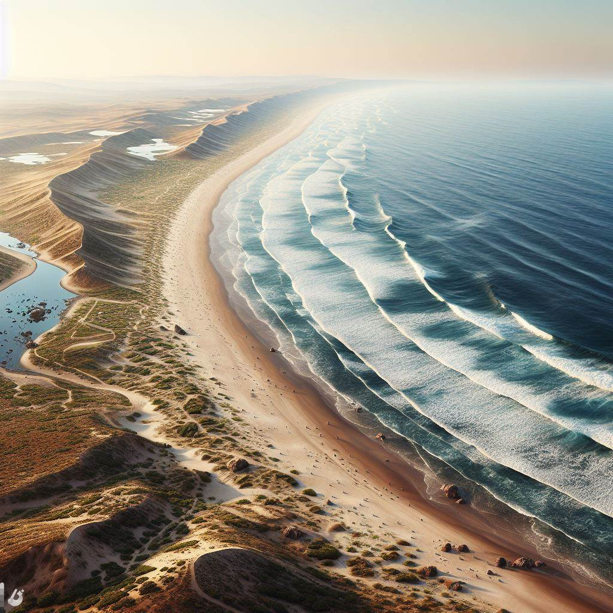
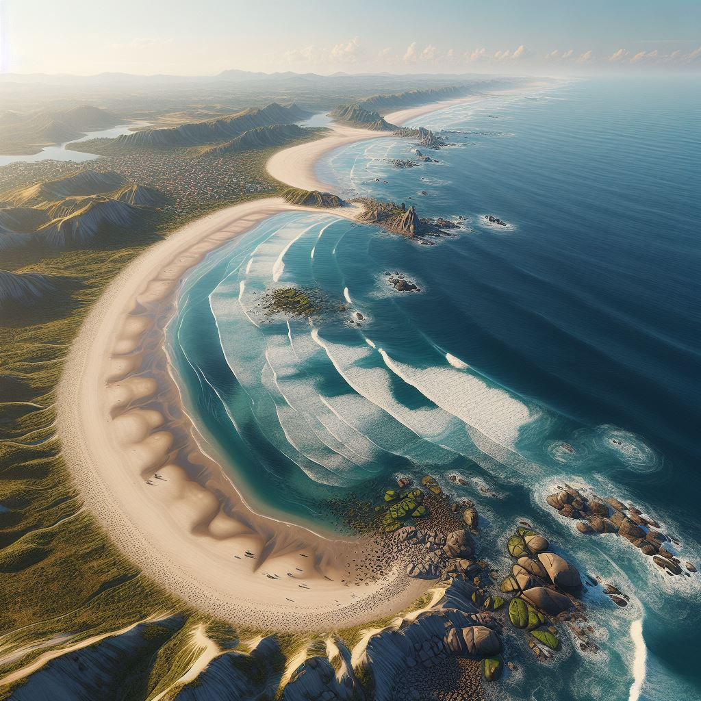

Presérver
Ensemble préservons la beauté naturelle de nos littorales pour les générations futures.

Evénements
Unissons nos efforts pour nettoyer et protéger nos littorales lors de nos événements de préservation environnementale.

Echanges
Favorisons les échanges durables pour protéger et valoriser notre précieux environement